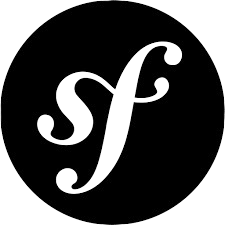

Je m'appelle MEBARKI Thileli, je suis diplômée d'un Baccalauréat en Science Expérimentale mention Bien. Actuellement étudiante en BTS SIO (Services Informatiques aux Organisations) option SLAM au sein de l'école INSTA et je fais mon alterance au sein du groupe Savencia.
Je suis passionnée par l'informatique depuis toujours c'est la raison pour laquelle j'ai décide d'en faire un véritable métier et j'ai intégré le BTS SIO.
Ce portefeuille de compétence va faire l'objet de recensement de mes réalisations professionnelles rencontrées durant ma formation.
Mon CV Mes certifications Mon tableau de synthèse
